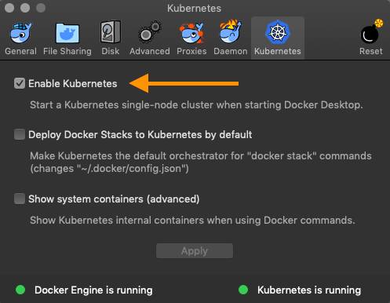

Cloud Native OCI
üíª Workshop Preparation
 +
+
Created with ❤ by Oracle A-Team
Table of Contents
Prerequisites
The following applications are required for the workshop. Please ensure access and/or installation ahead of time üôè
- OCI Tenancy Access*
- Docker Desktop ~2.x
- OCI Command Line ~2.5.x (optional)
- JSON CLI Processor ~1.6 (optional)
*Tenancy access may be provided, or you may use an existing tenancy
Prepare K8S
Several exercises in the workshop require the use of Kubernetes. In order to run commands in a local cluster, please follow these instructions to setup your environment.
Enable Kubernetes (Mac)
Enable Kubernetes (Windows)

Check kubectl context
kubectl config current-contextCreate namespace
kubectl create namespace mushopSet default namespace (optional)
kubectl config set-context $(kubectl config current-context) --namespace=mushopInstall an ingress controller
kubectl apply -f https://raw.githubusercontent.com/kubernetes/ingress-nginx/master/deploy/static/mandatory.yaml
kubectl apply -f https://raw.githubusercontent.com/kubernetes/ingress-nginx/master/deploy/static/provider/cloud-generic.yamlNOTE: There are several options for ingress controllers in K8S. This demo uses the common ingress-nginx
☝️ More on this later...
Downloads
Any workshop related downloads may be found here.
üîí NOTE Access credentials will be provided during the workshop